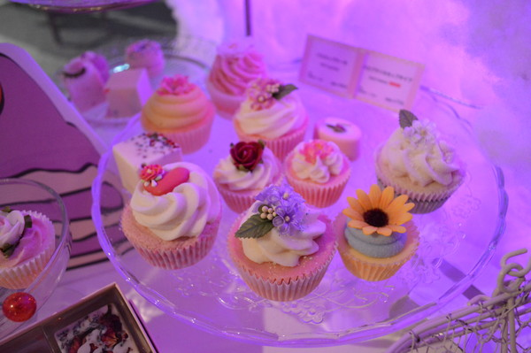

こんにちは、冬に負けきっている東田です。２月のセンター時期まで保つのでしょうか。いや保たない（反語）。
はてさて、今回のセミナーでは、土曜日に行う渋谷歩きの計画を立てました。
各所の巡順やタイムスケジュール、交通機関の時刻表とにらめっこしつつ、計画。
その結果、NHK→TEPIA→SWEETS by NAKEDの順で回ることに。
というわけで、レポです！
全体の待ち合わせは渋谷駅でしたが、小田急組は下北沢で合流して乗り換え。
無事についたものの、ハチ公口がわからない！なんて不親切な案内表示なんだ…とウロウロしつつ、ハチ公前に。
クリスマスハチ公。かわいい。
ここから徒歩でNHKに向かいます。
途中でゲームセンターを見つけて入ってみたり。
VRゲーセンという面白いものも見ましたが、時間の関係で体験はできず。
そんな中男子はプリクラの現状を知らない事を知る。
確かに、最近のプリクラコーナーは男性のみの入場はNGなところが多いですね。
ちなみにプリクラと呼称していますが、正しくはプリントシール機、写真シール機です。プリント倶楽部は商標。
今は撮影ブース→落書きブース→印刷＋配信ブースの三ブースが多いかと思います。機体的には撮影１つ、落書き２つ、印刷＋配信１つが殆どかも。
撮影ブースは基本的に荷物置きスペースがあります。機械が詰まってるようなでっぱり。に載せる感じ。お高いドレッサーよろしく、ライトも３つ４つ有りますね。
グリーンやブルーバックもありますが、幾つか幕が用意されてあり、背景選択に応じて物理的に幕が切り替わるものもあります。あんまり後ろに立ちすぎるとぶつかったり。
美脚機能も基本は標準装備ですが、実はこれ、撮影範囲の下の方を引き伸ばしてるだけ。なので、大人数だからと言ってしゃがんだりすると学園○ンサムチックになります。
今は大体どのお店でも衣装を貸してくれますので、店内の更衣室で着替えてコスプリを撮影できます。
プリクラは撮る人は何度でも撮るので、撮ったプリをみせるとハンコ推してくれて、ハンコが貯まると１回無料になるカードを配布したり。
……いやー進化ですね…むかしのプリクラってすでにカットラインが入っていたりしましたね。ブースも上半身しか入らない位小さかったし。
あの手この手が発展してるのも面白いところですね。
ふと思い出して太古の昔に作っていたプリクラ帳を開いて後悔しました。ああ時の流れが怖い……。
NHK
というわけでNHKさんにお邪魔しました。
某番組の制作にて先生がご協力をされたとのことで、今度はその番組の収録の見学です。
中は基本的に撮影がNGなのですが、スタジオパークという放送テーマパークも有るためか、ファミリー向けの展示が外部通路に有りました。
番組やその年の出来事を年表にまとめられているので、別の年代で会話が捗りそうです。QRコードの利点を生かしたよい利用方法ですね。
スタジオですが、おもったよりもスタッフさんが多かったです。３０人ほどは居たのではないでしょうか。若い人が多く、殆どが２０～３０代と見えました。
中でひっそりと描いていたクロッキーの一部。分担作業をしている感が強かったです。
照明もたくさんありました。配置としては舞台に似た雰囲気ですが、閉鎖的で大きな舞台と言った感じですね。
指示のし易いよう、ラインと番号がひとつづつ振ってありました。指示が下り次第、長い棒を使って角度を微調整するスタッフさん。すごい。
また、セットやシーンでいらないと思ったらすぐ撤去するのも印象的でした。綿密に打ち合わせをして、打合せで決定したことは現場では動かさないんだろうと思っていましたが…
「やっぱそれ邪魔だわ」「はーい！」でしまっちゃう。臨機応変に動かせるのは良いですね。
また、手洗い場等に張り紙が多いのも印象的でした。おそらく、急いでいる人が慌てるあまりに忘れ物をしないよう注意喚起しているのではないでしょうか。
このように、どんな人が実際に動いているのかを考えた仕事場を作るのも大事だと思います。
今回の本番ではとてもスムーズに流れを行えたため、１時間半ほどで収録を行いましたが、そのうち2/3もカットされてしまうという衝撃の事実に
セミナー生から上がる\\エーッ！？//の声。アマでもプロでも同じですが、どこを取捨選択するかというのは悩ましいですね…もったいなさも感じます。
お次はTEPIAです。が。まさかのバス乗り間違え！！！！
ちゃんと表記を見ればよかったですね。
ハチ公バスと呼ばれる区間内一律100円の小さくて可愛いバスでした。窓にも足跡。
TEPIA
そんなこんながあったところでTEPIAに到着。
入り口にあるオムロンさんの年代・性別判定でワイワイしてました。
外光が強かったせいか、全く人間と判定されない自分。夕方になった帰りにやってみたらちゃんと判定されましたよかった。
使用しているカメラはあんまり画質が良いものではなかったのですが（Webカメかしら）、
動作（展示する時間や判定に最低限必要な画素等）や値段を天秤にかけるのは結構難しい部分なのかもしれません。
案内を受けた後、各自見て回りました。何を見ても技術の進歩スゲ～～～！！と驚いてしまいます。
入り口すぐのところにあったバイオミメティクスについての展示も面白かったですね。この技術を応用すればどんなものが出来るかと考えました。
Manga Generator
そんなわけで大本命１のMangaGenerator。
ガイドさん曰く、修学旅行生等の学生は並んでプレイする人気コンテンツだそうです。こんな張り紙もあったり。
客層自体は上の会場で何をしているかでかなりばらばらになるらしく、電気展示会、ショールーム、会議等、ファミリーだったり技術関係者だったりと様々だそう。
見てて思った改善点としては
- 選択がわかりにくい
- フキダシの文字がUIにかぶっていて読めない
- 判定が厳しい
- プリクラに感覚が近い
等ですね。特に、最後に関してはプリクラを観察するのも手かもしれません。
おみやげとして、作成した漫画はブース奥のプリンターから吐き出されます。
ExPixel

大本命の２、ExPixel。
未来の暮らしというコンセプトで、幾つかの展示を合わせていました。
これは…なんとも言えないんですが、
- そもそも何の展示なのかがわからない（一応、キャラ、背景、字幕が変わっているんですが）
- 周りの展示を見ると内容が浮いてるように感じる
というのが大きな問題だと思いました。
リモコン２台使って、２つの画面をいじれるのは良いかもしれないなーという考え。従来型のリモコンじゃなく、例えば身体の動作等のリモコンも作れるのでは？とも思いましたが、
子供に合わせるのならばこういう感じのも好きですね。子供用リモコンと大人用リモコンとかかわいい。
あとは、画面の色味が結構浅いなと感じました。これは色調補正をかけたら少しは改善するかもしれません。
SWEETS by NAKED
続きまして日が暮れて表参道。アップルストアやイルミネーションにヒョエー…と圧倒されつつ、SWEETS by NAKEDへ。
すごい！
すごいすごい！ｷｬｯｷｬ！
テンションが上りすぎて児童と化しました。これはIQ下がる。
メモは残しているのですが、文にしてまとめきる自信が無いのでステキな写真とともに箇条書きでお送りします。
- 思った以上にカップルよりも女性グループ（２～４人）が多い
- 男性あんまり見ない→どちらかというと女性でキャイキャイしてる
- 雰囲気を作るのはスタッフも大事
- スタッフではなく「その世界のキャラクター」→TDLのキャスト的な…
- ⇒現実性を省く有効な手段
- スタッフではなく「その世界のキャラクター」→TDLのキャスト的な…
- センサー類は隠すよりも紛れ込ませるのがベターなのではないか？
- マッピング部分中央、ドアポスト
- プレイ中の覆いを薄くすることで、後ろで待っている待機者へのスクリーン演出としても使える
- 視覚、聴覚、嗅覚、味覚にフルに語りかけてくる。
- インタラクションが無くても多分楽しい
- 気づいて居ない人が多い（でも楽しんでる）
- インタラクション要素があっても「すごいイルミネーション」という扱いになるのでは
- 「きゃーすごーい」と「すごい」は別
- 技術的なすごいはそこまでいらないのかもしれない
- 可愛いとか綺麗とか
- 「本物の（お菓子）を利用した云々」というPOPは眺めて感心してる（下図、本物のポップコーンで出来た飾り）
- 技術的にはそこに投影されてるマッピングのほうがすごいように感じるけど、そこまでは見てない。
- 多分言われたらそうだよね～とはなるのじゃないかしら
- 技術的なすごいはそこまでいらないのかもしれない
- 現実性を無くすのがすごい
- 中でお金は使わせない
- スタッフはスタッフではなく「お菓子の世界の人」
- 見える部分に現実味のあるもの（現実の広告等）を置かない
- 動線がすごい
- 最初の通路で「本物の飴で出来た看板です」＋看板ポスター
- お菓子の世界のアピール（世界観の共有）
- ヒントとしての最初の情報植え付け
- (￣ー￣) 。o（本物のお菓子で作ってるんだな）
- 曲がる直前（真正面）にプロジェクションマッピングされる部屋＋ロゴ
- ヒントとしての情報植え付け
- (￣ー￣) 。o（プロジェクションマッピングがあるんだな）
- ヒントとしての情報植え付け
- 曲がると大きなオブジェクトのある広場
- インパクトを与える
- 振り返るとプロジェクションマッピング＋Kinectv2
- しかしこれだけではインタラクティブ性がわからない（眺めてるだけ）
- スタッフのアシスト
- ○○出来るとは言わずにただその前で踊る
- 興味深そうに見ている客を誘い込み画面を見せる
- スペシャルルーム
- 部屋の外観にそこそこ力を入れている（プロジェクション）
- 正直中がめちゃくちゃすごいというわけでもない（下図、チョコレートリングのお店）
- 実はスイーツ受け渡し部分では別業者が入っているそうな。
- スイーツを渡されるのでそこで相殺されている？（下図、アイスクリームのお店）
- 世界観さえ壊さなければOK？（京都のコンビニ的な）
- 気になるので次はチケット買おうとリピーターに思わせる？
- 別の仲良しグループとならまた来たいかもしれない
- 指輪とアイスは種類がある
- 私はこれだった！等の会話をすることが出来る
- 出口を出ると物販
- スイーツに関係ある物・無いもの含めた女性向けグッズ展開
- スイーツを模したグッズも多い
- 必ずしもスイーツが食べたくて来ているわけじゃない気がする
- 世界を味わうために来ている
- 必ずしもスイーツが食べたくて来ているわけじゃない気がする
- 最初の通路で「本物の飴で出来た看板です」＋看板ポスター
…ぜーはー。
こんなところでしょうか。
解散はこの後すぐだったのですが、せっかくなので女子二人は通りがかりに気になっていた文房具カフェさんで夜ごはんにしました。
世界を作るにはプロジェクションマッピング等の大掛かりなものが無くても、こういった小物が凝っているだけで一気に雰囲気が出る気がします。
さりげないところまで気を配ると世界観が増すのは、創作も同じですね。
お客さんの描いた漫画も展示されていました。個性があって面白い。
インプットの足らない時期が続いていたので、良いタイミングで様々な刺激を得ることができたと思います。
私の場合はインプットしたものをなかなかすぐに使うことができず、大量に仕入れてから
突然アイデアがドバーーーっと出てくるタイプなので、この経験達も肥料として良い土になるのでしょう。
ではでは、本日はこのあたりで。
ざいつぇん。
[…] #8-渋谷訪問（東田） […]
[…] #8-渋谷訪問（東田） […]